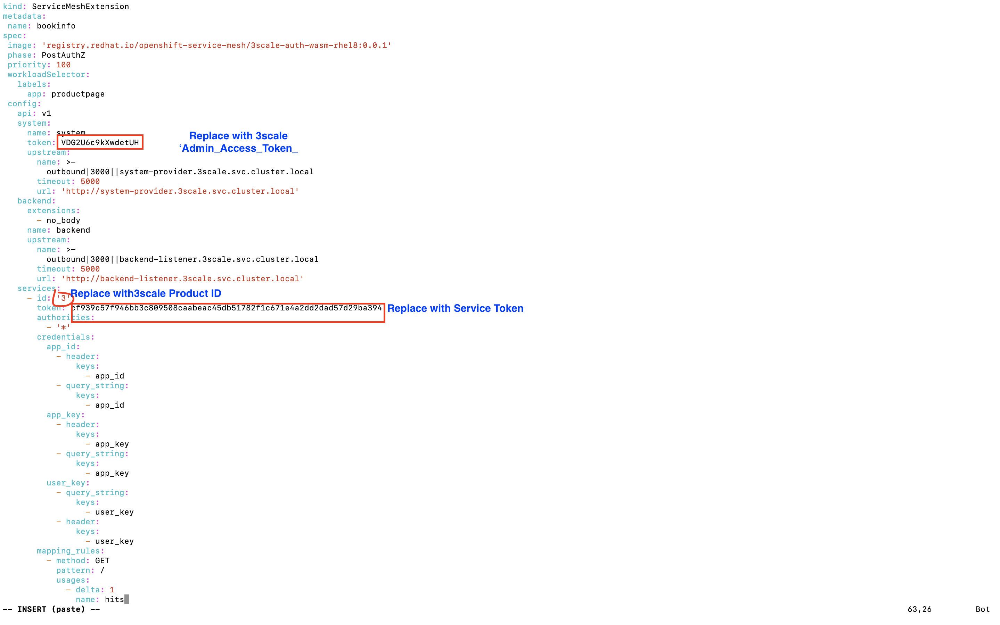
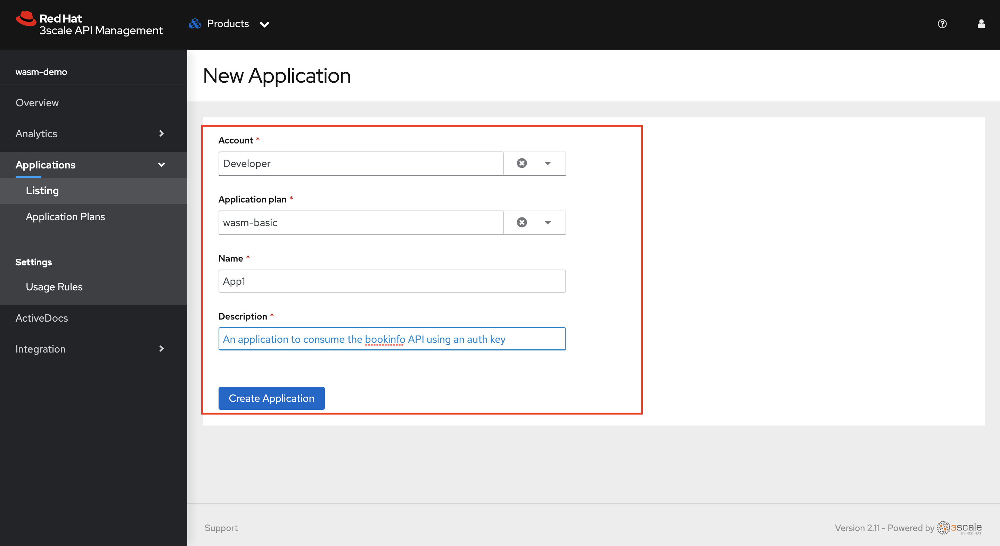
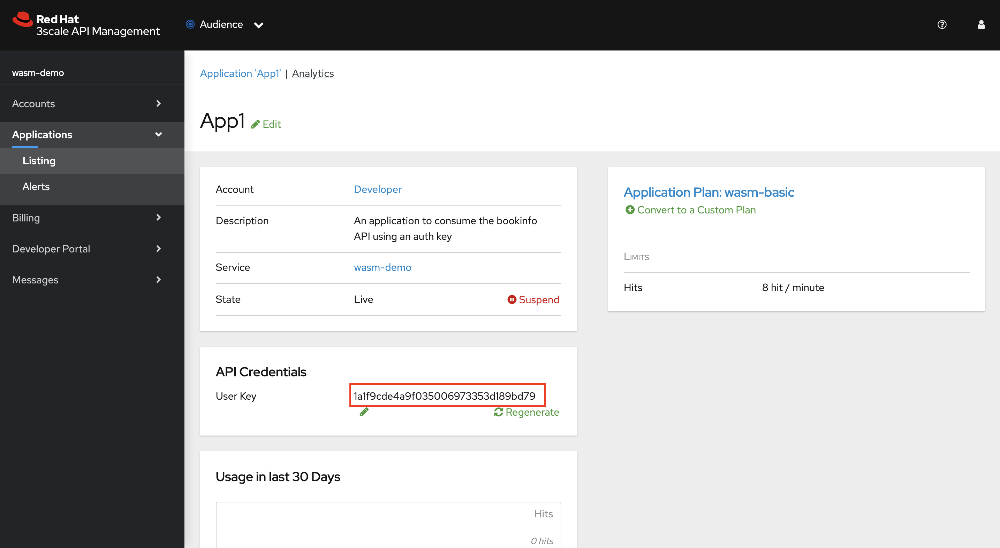
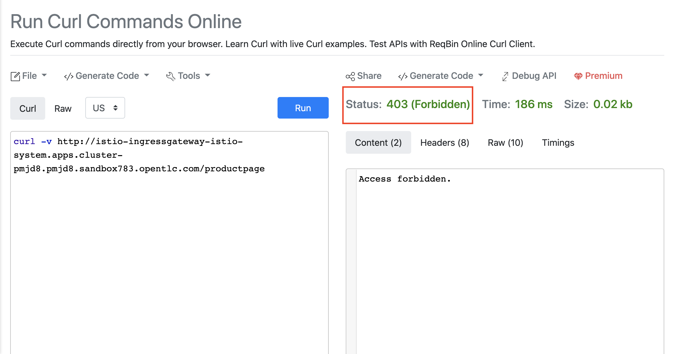

Enable API Management for bookinfo Overview In this section we shall enable the API management for bookinfo application using the 3scale WASM module Create Service Entry To have the 3scale Web Assembly module authorize requests against 3scale, the module must have access to 3scale services. You can accomplish this within Red Hat OpenShift Service Mesh and Istio by applying an external ServiceEntry object. The custom resources set up the service entries for access from within Service Mesh to 3scale Hosted (SaaS) for the backend and system components of the Service Management API and the Account Management API. The Service Management API receives queries for the authorization status of each request. The Account Management API provides API management configuration settings for your services. Create a Custom Resource Definition file for the System Service Entry with name ServiceEntry_system-entry.yaml using vim or any other editor on the CLI. Copy paste the below yaml into the file and save it. apiVersion: networking.istio.io/v1beta1 kind: ServiceEntry metadata: name: system-entry spec: hosts: - system-provider.3scale.svc.cluster.local location: MESH_EXTERNAL ports: - name: http number: 3000 protocol: HTTP resolution: DNS Create a Custom Resource Definition file for the Backend Service Entry with name ServiceEntry_backend-entry.yaml using vim or any other editor on the CLI. Copy paste the below yaml into the file and save it. apiVersion: networking.istio.io/v1beta1 kind: ServiceEntry metadata: name: backend-entry spec: hosts: - backend-listener.3scale.svc.cluster.local location: MESH_EXTERNAL ports: - name: http number: 3000 protocol: HTTP resolution: DNS Apply the CRDs to your cluster using the below command oc apply -f ServiceEntry_system-entry.yaml -f ServiceEntry_backend-entry.yaml -n bookinfo Create Service Mesh Extension The ServiceMeshExtension custom resource spec provides the configuration that the Proxy-WASM module reads from. The spec is embedded in the host and read by the Proxy-WASM module. Follow the below steps to configure the ServiceMeshExtension If you haven’t already noted down the 'Admin Access Token' from 3scale Secret from earlier labs please follow these steps. Retrieve the Admin_Access_token using the Console UI. Select 3scale project and Navigate to Developer > Secrets and search for system-seed From the system-seed secret just copy and note down the the Admin_Access_Token The service token wil enable the permission for service mesh to be able to access a particular 3scale product. From the 3scale admin-portal navigate to Account Settings > Personal > Tokens and Copy the Service Token of the product we created earlier Alternatively, you can also use 3scale admin access token along with the 3scale product ID from the 3scale product configuration earlier and run the following command with values replaced to obtain the Service token: curl https://3scale-admin.%CLUSTER_WILDCARD_URL%/admin/api/services/{product id}/proxy/configs/production/latest.json?access_token={access token} | jq '.proxy_config.content.backend_authentication_value' Copy and note down the Service Access Token obtained Create a Custom Resource Definition file for the Service Mesh Extension with name ServiceMeshExtension_bookinfo.yaml using vim or any other editor on the CLI. Copy paste the below yaml into the file and replace the access token, service token, product id values and shown in the image below and save it. apiVersion: maistra.io/v1 kind: ServiceMeshExtension metadata: name: bookinfo spec: image: 'registry.redhat.io/openshift-service-mesh/3scale-auth-wasm-rhel8:0.0.1' phase: PostAuthZ priority: 100 workloadSelector: labels: app: productpage config: api: v1 system: name: system token: VDG2U6c9kXwdetUH upstream: name: >- outbound|3000||system-provider.3scale.svc.cluster.local timeout: 5000 url: 'http://system-provider.3scale.svc.cluster.local' backend: extensions: - no_body name: backend upstream: name: >- outbound|3000||backend-listener.3scale.svc.cluster.local timeout: 5000 url: 'http://backend-listener.3scale.svc.cluster.local' services: - id: '3' token: cf939c57f946bb3c809508caabeac45db51782f1c671e4a2dd2dad57d29ba394 authorities: - '*' credentials: app_id: - header: keys: - app_id - query_string: keys: - app_id app_key: - header: keys: - app_key - query_string: keys: - app_key user_key: - query_string: keys: - user_key - header: keys: - user_key mapping_rules: - method: GET pattern: / usages: - delta: 1 name: hits  Apply the CRD to your cluster using the below command oc apply -f ServiceMeshExtension_bookinfo.yaml -n bookinfo We have now successfully manged the API with 3scale. Next we have to authorize an application to acess this API Authorize an application to consume the API managed Login to 3scale and navigate to Products > wasm-demo > Applications > Listing and Click Create Application Choose the default Developer Account, wasm-basic as Application Plan. Give any name and description to the application. Click on Create Application  You should now have an API user key that you can copy and use for authorization  Verifying the policy enforcement You can now verify the policy enforcement by first calling the endpoint without credentials and then later using the api key. Open a browser window and navigate to: https://reqbin.com/curl Copy and paste the below command. curl -v http://istio-ingressgateway-istio-system.%CLUSTER_WILDCARD_URL%/productpage You should see a 403 status and we have not provided an api user key.  Now let’s append the api key and see what happens. Copy and paste the below command in reqbin. Do not forget to Replace the userkey. curl -v http://istio-ingressgateway-istio-system.%CLUSTER_WILDCARD_URL%/productpage?user_key={user key} You API call should be successful and should show a 200 HTTP response. If you make more than 8 calls per minute (recollect the limit we set in our application plans) you should see a 403 status. The count gets refreshed every minute In case you want to verify the calls on Kiali and Jaeger you can send multiple calls via reqbin and check the paths and traces on the Kiali and Jaeger interfaces as illustrated earlier. Configuring 3scale Path2 - Authentication Using OIDC